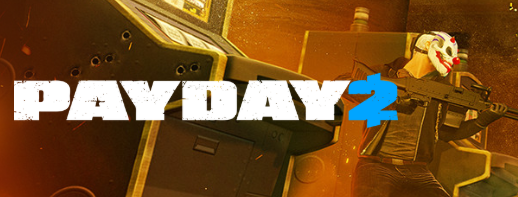
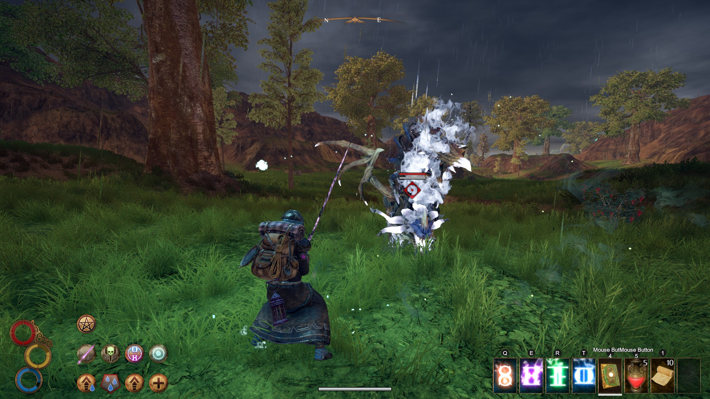

Game Review: Payday 2

Written by Michael Burkett on 10/14/2021
Payday 2 is a first-person horde shooter where you play as a heister and steal from massive establishments and organizations. You can try to complete missions stealthfully, avoiding cameras and guards as you clean the place out. Alternatively you can go loud and try to get out alive while fighting against countless waves of police assaults.
One thing that Payday 2 gets right is letting players choose if they want to play a heist in stealth or loud. These two options have vastly different playstyles and can even have separate mission objectives. Players are encouraged to create multiple builds to be able to experience heists in both modes.
Unlike a majority of other heist video games, Payday 2 gives the player high mobility with a first-person perspective. This allows players to skillfully maneuver in stealth and quickly adapt to perilous situations in loud. While there's plenty of randomized events in each mission, skill is doubtlessly a factor in the equation. Completing a heist for the first time on a high difficulty can feel like a genuine achievement, especially in stealth or playing on the game's hardest difficulty "Death Sentence."
Teamwork is very important in Payday 2. If you try to play the game solo, the game will give you AI companions who will help you and provide you with small buffs to pick up the slack.With this being the case, the stealth gamemode actually tends to suffer from having more players in a lobby. In loud companions can watch your back, but when you're trying to sneak through a bank, having a friend with you will just make it easier for you to be caught. There is very little incentive to have another player with you in stealth missions, especially when compared to the loud mode.
Overall, Payday 2 creates an exciting heisting experience. Clearing out banks like James Bond with a group of friends will never get old. The numerous ways to approach each level provides players with numerous scenarios to experience.
Game Review: Outward

Written by Michael Burkett on 10/14/2021
Outward is an open world survival RPG which stresses hardcore gameplay in unforgiving environments. The player isn't fundamentally stronger than an average person in this world, but the wilds are filled with powerful monsters and bandits. Starting the game, the player is given less than nothing, being dropped with a blood debt that must be repaid in part within five days or else you will lose your home. This calls the player to leave their safe hometown and search for loot in dangerous dungeons. On top of powerful enemies, the player also needs to worry about the weather, food and water, and diseases. Neglecting these things can lead to negative status effects and even death.
While Outward is clearly not for the faint of hard, the game is merciful, allowing the player to respawn infinitely. Story-wise, if the player dies, they'll be found by another adventurer and brought to a safe place or captured by enemies and carried deep into a dungeon.
Outward is one of the most immersive RPGs I have ever played. In similar games like Outward, you can start a quest and leave it for as long as you like before you end up attempting it. In Outward, quests are timed and have harsh penelties when you fail to meet that time limit. If you don't pay your debt in time, you can lose your house. If you don't take care of a bandit camp that villagers warn you about, the village will be destroyed. It's tough, but it makes sense and adds urgency to the things you do. The survival elements of the game compliment this, requiring you to carefully plan out your journeys.
You can play the game with at most two players. The co-op really brings the game a step up for me. Setting out on grand journeys and slaying powerful beasts feels all the better when it's done with a friend.
The game's crafting is another one of it's strong points. Almost every item that you find can be crafted into something that will aid you on your journey. Consumables are extremely important for staying alive in Outward. Enemies will drop components that you need for weapons and armor. Gems that you mine from the ground can be used to open secret doors in dungeons.
While Outward can be an extremely difficult game, no other RPG has been as immersive for me. The game's systems work together well to create a punishing environment and an exciting storyline. Playing a game where you aren't the "chosen one" is oddly refreshing.
The DLC...
| Version |
Date Released |
Description |
| Base Game |
March 26, 2019 |
The base game comes with four different regions to explore: Chersonese, the starting region, Enmerkar Forest, home base for the Blue Chamber questline, Abrassar, the region of the Heroic Kingdom, and the Hallowed Marsh, the land of Holy Mission. The player must choose one of the three organizations. Once they have, they will be set on missions to combat the "Scourge" a type of evil monster that has mysteriously appeared around the world. |
| The Soroboreans |
June 16, 2020 |
The Soroboreans DLC adds the Antique Plateau region along with the Sorobor Academy questline which runs parallel to the three main questlines. Players must work to prevent the "Rust Lich" from destroying Harmattan, the major city in the Antique Plateau. Due to the region's size, there is a runic train system to help players navigate it more quickly. |
| The Three Brothers |
December 15, 2020 |
The Three Brothers adds the Caldera region to the game along with the Sirocco questline which takes place after the main game's story. Caldera's volcano has destroyed the city of Sirocco and the citizens need the player's help if they hope to rebuild their home. |